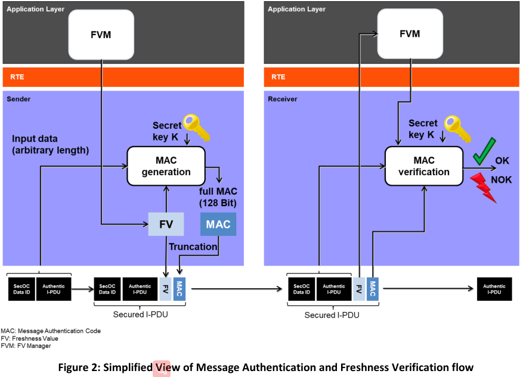
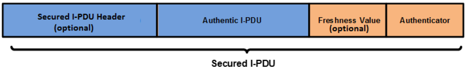
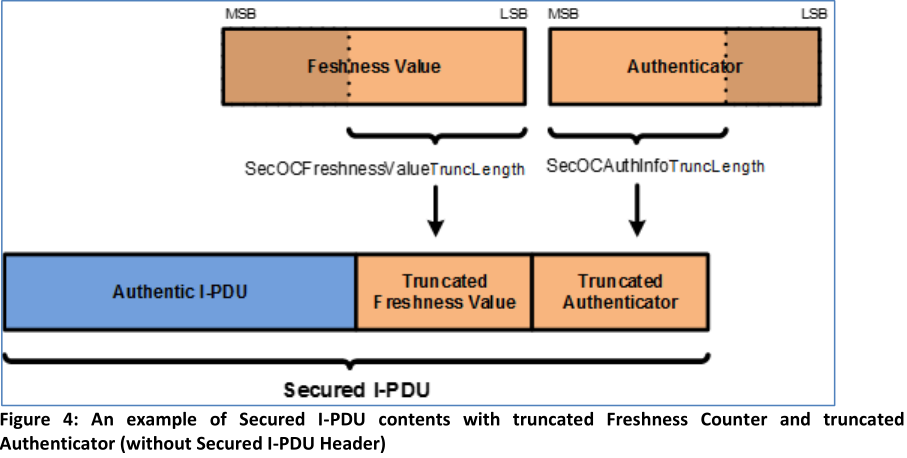
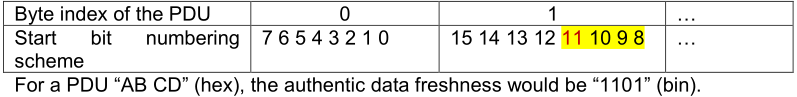
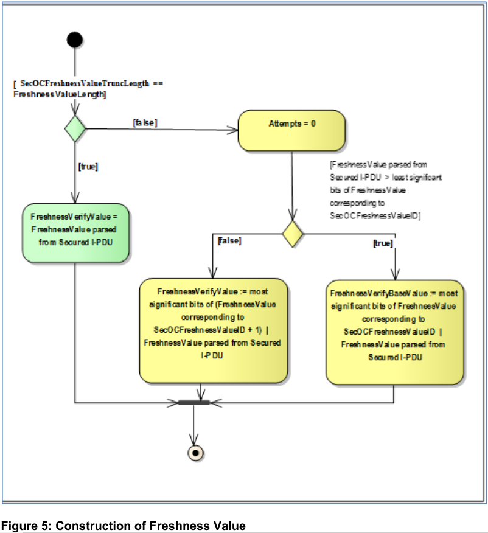
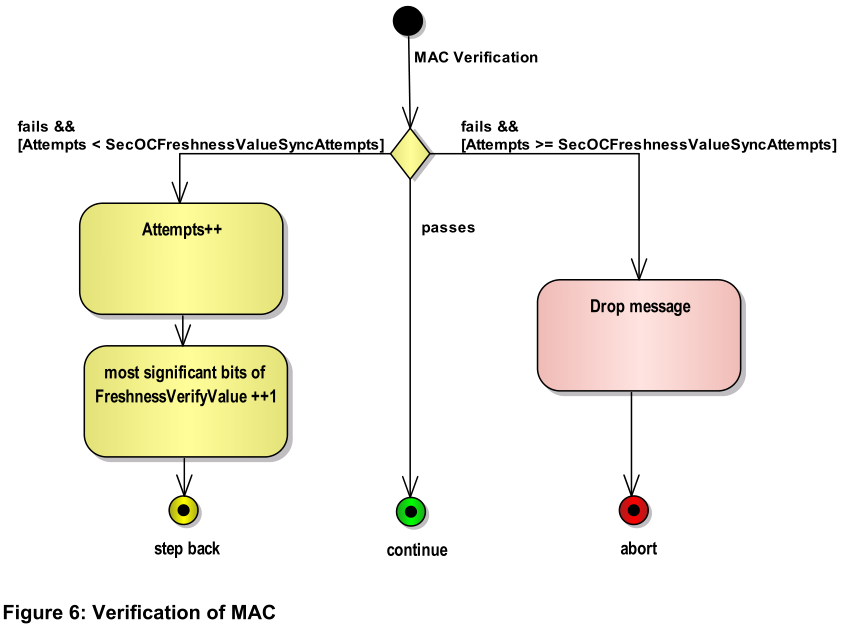
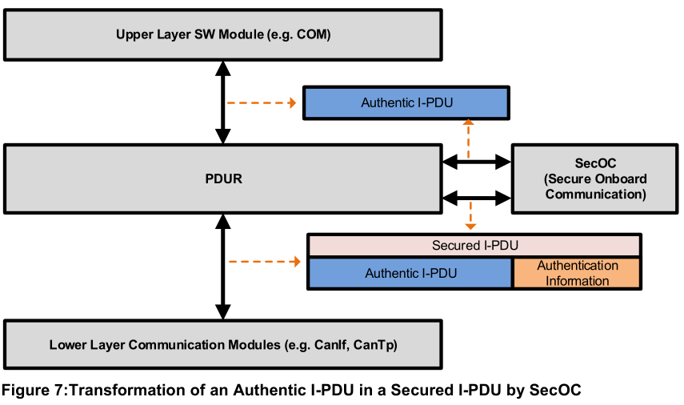

Function
功能描述¶
敏感数据的身份验证和完整性保护对于保护车辆系统的正确和安全功能是必要的——这确保接收到的数据来自正确的 ECU 并具有正确的值。
SecOC 模块旨在为 PDU 级别的敏感数据提供资源高效且可行的身份验证机制。 本规范中提出的方法通常支持使用 对称 和 非对称 方法进行 真实性和完整性 保护。 这两种方法大致针对相同的目标，并在概念上表现出主要相似之处，但由于底层原语的不同技术特性，也存在一些差异。 另外，Authenticator常用的术语也不同。 通常，术语消息认证码 (MAC) 用于对称方法，而术语签名或数字签名指的是具有不同属性和约束的非对称方法。
安全解决方案规范¶
本文档中描述的 SecOC 模块提供了验证车辆架构内 ECU 之间基于 PDU 的通信的 真实性 和 新鲜度 所需的功能。 该方法要求 发送 ECU 和接收 ECU 都实现一个 SecOC 模块 。 两个 SecOC 模块都集成在一起，在发送方和接收方提供上层和下层 PduR API。 两侧的SecOC模块一般都与PduR模块进行交互。
为了提供消息新鲜度，发送方和接收方的 SecOC 模块从 外部新鲜度管理器 获取每个 唯一 可识别的安全 I-PDU 的 新鲜度 ，即每个安全通信链路。
在发送方，SecOC 模块通过向传出的 Authentic(真实的) I-PDU 添加 认证信息 来创建 Secured（安全、可靠） I-PDU。 认证信息包括 认证符（例如消息认证码） 和可选的 新鲜度值 。 无论新鲜度值是否包含在安全 I-PDU 有效载荷中，新鲜度值都会在验证器的生成过程中被考虑。 当使用 Freshness（新鲜） Counter 而不是 Timestamp 时，Freshness Manager 应在向接收方提供身份验证信息之前增加 Freshness Counter。
在接收方，SecOC 模块通过验证发送方 SecOC 模块附加的 认证信息 来检查 Authentic I-PDU 的新鲜度和真实性。 为了验证 Authentic I-PDU 的真实性和新鲜度，提供给接收端 SecOC 的 Secured I-PDU 应该与发送端 SecOC 提供的 Secured I-PDU 相同，接收端 SecOC 应该知道 Freshness Value 在创建 Authenticator 期间由发送方 SecOC 使用。

安全解决方案的基本实体¶
Authentic（真实） I-PDU and Secured（安全） I-PDU¶
Secured I-PDU 的有效载荷由 Authentic I-PDU 和 Authenticator（例如消息认证码）组成。 安全 I-PDU 的有效载荷可以选择性地包括用于创建验证器的新鲜度值（例如 MAC）。 安全 I-PDU 中内容的结构顺序符合图 3。

安全I-PDU内的真实I-PDU的长度、新鲜度值和鉴权器可以从一个唯一不可定义的安全I-PDU变化到另一个。
认证器（例如 MAC）是指使用密钥、安全 I-PDU 的 数据标识符 、 真实有效负载 和 新鲜度值 生成的唯一 认证数据字符串 。 Authenticator （认证器）提供高水平的可信度，即 Authentic I-PDU 中的数据是由合法来源生成的，并在预定的时间提供给接收 ECU。
根据用于生成 Authenticator 的身份验证算法（参数 SecOCTxAuthServiceConfigRef 或 SecOCRxAuthServiceConfigRef），可能会截断由身份验证算法生成的结果 Authenticator（例如，在 MAC 的情况下）。 当消息有效载荷的长度有限并且没有足够的空间来包含完整的 Authenticator 时，可能需要截断。
Secured I-PDU 中包含的 Authenticator 长度（参数 SecOCAuthInfoTruncLength）特定于可唯一识别的 Secured I-PDU。 这允许通过为每个安全 I-PDU 提供 MAC 截断长度的细粒度配置来提供跨系统的灵活性（即，两个独立的唯一安全 I-PDU 可能具有不同的验证码长度，包括在安全 I-PDU 的有效载荷中）。
如果截断是可能的，则 Authenticator 应该只被截断到认证算法生成的结果 Authenticator 的最高有效位。 图 5 显示了根据参数 SecOCFreshnessValueTruncLength 和 SecOCAuthInfoTruncLength 截断验证器和新鲜度值的示例。

Note
对于静态参与者的资源约束嵌入用例，我们建议使用消息认证码（MAC）作为认证的基础（例如，基于AES[19]的CMAC[16]，具有足够的密钥长度）。
Note
在使用 MAC 的情况下，可以仅传输和比较 MAC 的一部分。 这称为 MAC 截断。 然而，这至少对于伪造单个 MAC 会导致较低的安全级别。 虽然我们建议始终使用至少 128 位的密钥长度，但 MAC 截断可能是有益的。 当然，必须仔细选择每个用例的 MAC 的实际长度。 对于一些指导，我们参考 [16] 的附录 A。 一般来说，64 位及以上的 MAC 大小被认为可以提供足够的保护来抵御 NIST 的猜测攻击。 根据用例，不同的 MAC 大小可能是合适的，但这需要安全专家仔细判断。
SWS_SecOC_00011 : 直接或间接传输到通信链路另一侧的所有SecOC数据（例如，新鲜度值、认证器、数据标识符、SecOC消息链路数据等）应按照大端字节顺序进行编码，以便每个SecOC模块以相同的方式解释数据。
SWS_SecOC_00261: 安全I-PDU报头应以字节表示真实I-PDU的长度。标头的长度应可通过参数SecOCAuthPduHeaderLength进行配置。
Note
SecOC 支持在单独的消息（安全 PDU 集合）和安全 I-PDU 报头中结合使用身份验证数据。 SecOC 还涵盖动态长度的真实 I-PDU。
Authenticator(认证器)覆盖的数据¶
计算 Authenticator 的数据包括安全 I-PDU 的数据标识符（参数 SecOCDataId）、真实 I-PDU 数据和完整新鲜度值。 它们分别连接在一起构成位数组，该位数组被传递到身份验证算法中以进行身份验证器生成/验证。
Note
“|”表示串联
新鲜度值¶
每个安全I-PDU配置有至少一个新鲜度值。新鲜度值是指用于确保安全I-PDU的新鲜度的单调计数器。这种单调计数器可以通过称为Freshness counter的单个消息计数器或称为Fresh ness Timestamp的时间戳值来实现。新鲜度值来自新鲜度管理器。
SWS_SecOC_00094: 如果参数
SecOCFreshnessValueTruncLength被配置为比实际新鲜度值更小的长度，SecOC 应仅包括新鲜度值的最低有效位直到安全 I-PDU 中的SecOCFreshnessValueTruncLength。如果参数
SecOCFreshnessValueTruncLength配置为 0，则新鲜度值不应包含在受保护的 I-PDU 中。
Note
包含在经过验证的消息有效负载中的完整新鲜度值的更多位数导致更大的窗口，在该窗口中接收器保持与发送器新鲜度值同步而不执行同步策略。
Note
当在经过身份验证的消息有效负载中包含部分新鲜度值时，新鲜度值被称为两部分，最高有效位和最低有效位。 安全 I-PDU 有效载荷中包含的计数器部分称为新鲜度值的最低有效位，而计数器的其余部分称为新鲜度值的最高有效位。
SWS_SecOC_00219: 如果
SecOCUseAuthDataFreshness设置为 TRUE，SecOC 将使用 Authentic I-PDU 的一部分作为新鲜度。 在这种情况下，SecOCAuthDataFreshnessStartPosition确定 Authentic I-PDU 内新鲜度的起始位置（以比特为单位），SecOCAuthDataFreshnessLen确定其长度（以比特为单位）。
Note
这允许重用来自有效负载的现有新鲜度值，这些值保证在新鲜度时间戳的有效期内是唯一的，例如 一个 4 位 E2E 计数器。 在这种情况下，SecOC 不需要生成任何额外的计数器值。
Example
如果SecOCUseAuthDataFreshness设置为TRUE，SecOCAuthDataFreshnessStartPosition设置为“11”，SecOCAAuthDataFreshLen设置为“4”，则将提取PDU的以下部分：
SWS_SecOC_00220: 新鲜度管理器以字节数组的形式在接口函数中提供或接收新鲜度信息。新鲜度始终与数组中第一个字节的MSB对齐。新鲜度的第15位是第2字节的MSB，依此类推。新鲜度数组中未使用的位必须设置为0。相关的长度信息必须以位为单位。
Example
10位新鲜度“001101011”（bin）可以位于2字节数组中，并对应于值：“35 80”（十六进制）。长度值为10。
SWS_SecOC_00221: 如果对于PDU配置，
SecOCQueryFreshnessValue=CFUNC和SecOCProvideTxTruncatedFreshnessValue=TRUE，则每当为各个PDU构造DataToAuthenticator时，SecOC都会调用接口函数SecOC_GetTxFreshnessTruncData。SWS_SecOC_00222: 如果PDU配置的
SecOCQueryFreshnessValue=CFUNC和SecOCProvideTxTruncatedFreshnessValue=FALSE，则每当为相应的PDU构造DataToAuthenticator时，SecOC都会调用接口函数SecOC_GetTxFreshness。SWS_SecOC_00223: 如果对于PDU配置，
SecOCQueryFreshnessValue=RTEANDSecOCProvideTxTruncatedFreshness Value=TRUE，则每当为相应PDU构造DataToAuthenticator时，SecOC都会调用服务操作FreshnessManagement_GetTxFreshnessTruncData。SWS_SecOC_00224: 如果对于PDU配置，
SecOCQueryFreshnessValue=RTEANDSecOCProvideTxTruncatedFreshnessValue=FALSE，则每当为相应的PDU构造DataToAuthenticator时，SecOC都会调用服务操作FreshnessManagement_GetTxFreshness。SWS_SecOC_00225: 对于排队到SecOC的每个传输请求，应维护认证构建计数器。
SWS_SecOC_00226: 在初始处理安全 I-PDU 的传输请求时，SecOC 应将认证构建计数器设置为 0。
SWS_SecOC_00227: 如果新鲜度函数的查询（例如
SecOC_GetTxFreshness()）返回E_BUSY或验证器的计算（例如Csm_MacGenerate()）返回E_BUSY、QUEUE_FULL或任何其他可恢复的错误，则验证构建计数器应递增。
Note
返回值E_NOT_OK不被视为可恢复错误。
SWS_SecOC_00228: 如果构建身份验证失败，且身份验证构建计数器尚未达到配置值
SecOCAuthenticationBuildAttempts，则应在下次调用Tx主函数时重试新鲜度尝试和身份验证器计算。SWS_SecOC_00229: 如果认证建立计数器已经达到配置值
SecOCAuthenticationBuildAttempts，或者新鲜度函数的查询返回E_NOT_OK，或者认证器的计算返回不可恢复的错误，例如返回E_NOT_OK或KEY_FAILURE，SecOC模块将使用SecOCDefaultAuthenticationInformationPattern来处理所有的 如果发送SecOCDefaultAuthenticationInformationPattern由服务SecOC_SendDefaultAuthenticationInformation启用，则新鲜度值和 Authenticator 字节用于构建身份验证信息。 如果未启用发送SecOCDefaultAuthenticationInformationPattern，SecOC 模块应从其内部缓冲区中删除 Authentic I-PDU 并取消传输请求。
Example
SecOCFreshnessValueTxLength=4位 SecOCAuthInfoTxLength=20位 SecOCDefaultAuthenticatorValue=0xA5 安全PDU中生成的默认身份验证信息将是0x05（截短的新鲜度值）|0xA5 0xA5 0xA0（截短的身份验证器）。“|”表示串联。
SWS_SecOC_00230: 如果PDU配置的
SecOCQueryFreshnessValue=CFUNC和SecOCProvideTxTruncatedFreshnessValue=TRUE，SecOC将调用名为SecOC_GetTxFreshnessTruncData的函数，以获取TX消息的当前新鲜度。SWS_SecOC_00231: 如果PDU配置的SecOCQueryFreshnessValue=CFUNC和SecOCProvideTxTruncatedFreshness Value=FALSE，SecOC将调用名为SecOC_GetTxFreshness的函数，以获取TX消息的当前新鲜度。
SWS_SecOC_00232: 如果对于PDU配置，
SecOCQueryFreshnessValue=CFUNC，SecOC调用具有SWS_SecOC_91005中描述的签名的函数，以指示已成功启动安全I-PDU进行传输。
Note
消息出现在总线上后，不会调用此函数。在成功向PduR发送请求之后，调用该函数被认为是更安全的。
SWS_SecOC_00233: 如果
SecOCQueryFreshnessValue = RTE对于 PDU 配置，SecOC 调用服务操作FreshnessManagement_SPduTxConfirmation以指示安全 I-PDU 已成功启动传输。SWS_SecOC_00234: 对于SecOC内的每个已处理的安全I-PDU，应维护认证构建计数器和认证验证尝试计数器。
SWS_SecOC_00235: 在初始处理接收到的安全I-PDU时，认证构建计数器和认证验证尝试计数器应设置为0。
SWS_SecOC_00236: 如果新鲜度函数的查询（例如
SecOC_GetRxFreshness()）返回 E_BUSY，则认证构建计数器应递增，并且不应执行任何认证验证尝试。SWS_SecOC_00237: 如果验证器的验证（例如
Csm_MacVerify()）返回E_BUSY、QUEUE_FULL或任何其他可恢复的错误，则验证构建计数器应递增。
Note
返回值E_NOT_OK不被视为可恢复错误。
SWS_SecOC_00238: 如果身份验证构建尝试失败，且身份验证构建计数器尚未达到配置值
SecOCAuthenticationBuildAttempts，则应在下次调用Rx主函数时重试新鲜度尝试和身份验证。SWS_SecOC_00239: 如果认证器的验证可以成功执行但验证失败（例如 MAC 验证失败或密钥无效），则应增加认证验证尝试计数器并将认证构建计数器设置为 0。
Note
重置身份验证构建计数器应防止过早中断身份验证过程，即使仍然可以进行身份验证验证尝试。
SWS_SecOC_00240: 如果认证构建计数器已达到配置值
SecOCAuthenticationBuildAttempts，SecOC模块应从其内部缓冲区中删除Authentic I-PDU，并丢弃接收到的消息。VerificationResultType应设置为SECOC_AUTHENTICATIONBUILDFAILURE。如果使用
SecOC_VerifyStatusOverride，则根据overrideStatus值处理验证结果和I-PDU。SWS_SecOC_00256: 如果新鲜度函数的查询返回E_NOT_OK，SecOC模块应从其内部缓冲区中删除Authentic I-PDU，并丢弃接收到的消息。
VerificationResultType应设置为SECOC_FRESHNESSFAILURE。SWS_SecOC_00241: 如果认证验证尝试计数器已达到配置值
SecOCAuthenticationVerifyAttempts，或者认证器的验证返回了不可恢复的错误，例如返回E_NOT_OK或KEY_FAILURE，SecOC模块应从其内部缓冲区中删除Authentic I-PDU，并应丢弃接收到的消息。VerificationResultType应设置为SECOC_VERIFICATIONFAILURE。如果使用
SecOC_VerifyStatusOverride，则根据overrideStatus值处理验证结果和I-PDU。SWS_SecOC_00242: 如果认证器验证成功，则
VerificationResultType应设置为SECOC_VERIFICATIONSUCCESS。SWS_SecOC_00243: 新鲜度管理应使用验证状态调出功能（SWS_SECCO_00119）获取安全I-PDU的验证结果。此通知可以用作同步其他新鲜度尝试的示例，也可以用于计数器增量。
Note
SecOC 允许覆盖状态（参见 SWS_SECOC_00142）。 因此，如果新鲜度管理依赖状态标注，同时使用状态覆盖功能，则必须小心。 这会导致新鲜度管理中的冲突，并可能导致不正确的新鲜度值。
SWS_SecOC_00244: 如果 PDU 配置的
SecOCQueryFreshnessValue = RTEANDSecOCUseAuthDataFreshness = TRUE并且安全的 PDU 被完全接收，SecOC 调用 Rte 服务FreshnessManagement_GetRxFreshnessAuthData来查询当前新鲜度。 根据配置SecOCAuthDataFreshnessStartPosition和SecOCAuthDataFreshnessLen的配置，接收到的 PDU 数据的一部分被传递到此服务操作。SWS_SecOC_00245: 如果 PDU 配置的
SecOCQueryFreshnessValue = RTEANDSecOCUseAuthDataFreshness = FALSE并且安全的 PDU 被完全接收，SecOC 调用 Rte 服务FreshnessManagement_GetRxFreshness来查询当前新鲜度。SWS_SecOC_00246: 如果对于PDU配置
SecOCQueryFreshnessValue = CFUNCANDSecOCUseAuthDataFreshness = TRUE，并且安全PDU被完全接收，SecOC调用接口函数SecOC_GetRxFreshnessAuthData查询当前新鲜度。 根据配置SecOCAuthDataFreshnessStartPosition和SecOCAuthDataFreshnessLen的配置，接收到的 PDU 数据的一部分将传递给此函数。SWS_SecOC_00247: 如果对于PDU配置，
SecOCQueryFreshnessValue=CFUNCANDSecOCUseAuthDataFreshness=FALSE，并且已完全接收到受保护的PDU，则SecOC调用接口函数SecOC_GetRxFreshness以查询当前的新鲜度。SWS_SecOC_00248: 如果 Rx 新鲜度请求函数返回
E_NOT_OK，则 Authentic I-PDU 的验证被认为失败，并且该 PDU 的验证重试计数器应增加。 如果认证尝试的次数已经达到SecOCAuthenticationVerifyAttempts，SecOC 模块应该从它的内部缓冲区中移除 Authentic I-PDU。 故障SECOC_E_FRESHNESS_FAILURE应报告给 DET 模块。SWS_SecOC_00249: 如果对于PDU配置，
SecOCQueryFreshnessValue=CFUNC和SecOCUseAuthDataFreshness=TRUE，SecOC将查询名为SecOC_GetRxFreshnessAuthData的函数，以获取RX消息的当前新鲜度。SWS_SecOC_00250: 如果PDU配置的
SecOCQueryFreshnessValue=CFUNC和SecOCUseAuthDataFreshness=FALSE，SecOC将查询名为SecOC_GetRxFreshness的函数，以获取RX消息的当前新鲜度。
I-PDU的认证¶
SWS_SecOC_00031: 安全I-PDU的创建以及真实I-PDU的认证包括以下六个步骤:
- 准备安全I-PDU
- 构造身份验证器的数据
- 生成验证器
- 构建安全I-PDU
- 增量新鲜度计数器
- 广播安全I-PDU
SWS_SecOC_00033: SecOC 模块应准备安全 I-PDU。 在准备期间，SecOC 应分配必要的缓冲区来保存认证过程的中间结果和最终结果。
SWS_SecOC_00034: SecOC 模块应构造
DataToAuthenticator，即用于计算 Authenticator 的数据。DataToAuthenticator由 Data Id 的完整 16 位表示（参数 SecOCDataId）、Authentic I-PDU 的安全部分和完整的 Freshness Value 对应于给定顺序的 SecOCFreshnessValueID 组成。 为此，Data Id 和 Freshness Value 应以 Big Endian 字节顺序进行编码。SWS_SecOC_00035: SecOC 模块应通过将
DataToAuthenticator、DataToAuthenticator的长度传递到对应于SecOCTxAuthServiceConfigRef的认证算法中来生成认证器。SWS_SecOC_00036: SecOC模块应将生成的Authenticator截断为
SecOCAuthInfoTruncLength指定的位数。SWS_SecOC_00037: SecOC 模块应通过将安全 I-PDU 报头（可选）、新鲜度值（可选）和认证符添加到真实 I-PDU 来构建安全 I-PDU。
安全I-PDU的方案（包括安全I-PDU中内容的结构顺序）应符合以下要求：
$$ SecuredPDU = SecuredIPDUHeader (optional) | AuthenticIPDU | FreshnessValue [SecOCFreshnessValueTruncLength] (optional) | Authenticator [SecOCAuthInfoTruncLength] $$
Note
作为安全I-PDU的一部分包括的新鲜度计数器和认证器可以按照特定于安全I-PDU标识符的配置被截断。此外，Freshness Value可能是Authentic I-PDU的一部分
I-PDU的验证¶
SWS_SecOC_00040: 安全I-PDU的验证包括以下六个步骤：
- 解析真实的 I-PDU、新鲜度值和验证器
- 从 Freshness Manager 获取新鲜度值
- 构造数据以进行身份验证
- 验证身份验证信息
- 向新鲜度管理发送确认
- 将 Authentic I-PDU 传递给上层
SWS_SecOC_00203: 如果使用
SecOCRxSecuredPduCollection，则SecOC在收到构成安全I-PDU的真实I-PDU和加密I-PDU之前，不得进行任何验证。只有在两者都收到后，SecOC才能尝试验证生成的安全I-PDU。如果使用SecOC_VerifyStatusOverride，则根据overrideStatus值处理验证结果和I-PDU。
Note
这适用于当 SecOC 从 PduR 接收到安全 I-PDU 时的所有情况，这在使用 SecOCRxSecuredPduCollection 时发生在上述部分中。
SWS_SecOC_00211: 如果使用了
SecOCRxSecuredPduCollection，那么 SecOC 将不会尝试验证安全 I-PDU，直到它收到并缓冲了具有匹配消息链接器值的真实 I-PDU 和加密 I-PDU。 如果使用SecOC_VerifyStatusOverride，则根据overrideStatus值处理验证结果和I-PDU。
Note
如果 SecOCUseMessageLink 的多重性为 0，则意味着 SecOCMessageLinkLen 为 0，消息链接器值始终匹配。
SWS_SecOC_00042: 收到安全的I-PDU后，SecOC应解析真实的I-PDU、新鲜度值和来自它的身份验证器。

SWS_SecOC_00046: SecOC模块应构建用于计算接收方身份验证器（
DataToAuthenticator）的数据。此数据由SecOCDataId|AuthenticIPDU|FreshnessVerifyValue组成SWS_SecOC_00047: SecOC模块应通过将
DataToAuthenticator、DataToAuthenticater的长度、从Secured I-PDU解析的Authenticator和SecOCAuthInfoTruncLength传递到对应于SecOCRxAuthServiceConfigRef的认证算法中来验证Authenticator。如果使用SecOC_VerifyStatusOverride，则根据overrideStatus值处理验证结果和I-PDU。

SWS_SecOC_00048: SecOC模块应报告相应安全Rx PDU的验证状态，如下所示：
如果
SecOCRxDuProcessing/SecOCVerificationStatusPropagationMode设置为BOTH或FAILURE_ONLY，则应根据当前配置通过调用函数SecOC_VerificationStatusCallout和SecOC_VverificationStatus接口提供验证状态。如果配置设置为NONE，则不会提供报告。
Note
如果Freshness Manager需要安全PDU的状态（无论其是否成功验证），例如同步时间或计数器，则该状态应从SecOC提供的VerificationStatus服务中获取。
SWS_SecOC_00271: SecOC 模块应按如下方式报告相应安全 Rx-PDU 的验证状态：
如果
SecOCRxPduProcessing/SecOCClientServerVerificationStatusPropagationMode设置为BOTH或FAILURE_ONLY，则验证状态应根据其当前配置通过服务接口SecOC_VerificationStatusIndication提供。 如果配置设置为NONE，则不会提供报告SWS_SecOC_00272: 如果配置项
SecOCGeneral/SecOCPropagateOnlyFinalVerificationStatus设置为TRUE，则只报告 最终状态 。 如果此项设置为FALSE，则应根据 SWS_SecOC_00048 和 SWS_SecOC_00271 报告每个单独的验证状态（最后一次以及所有之前失败的验证状态）。
I-PDU的成功验证¶
SWS_SecOC_00050: 如果安全I-PDU验证成功或相应地设置了状态覆盖，SecOC模块应使用PduR的下层接口将真实I-PDU传递给上层通信模块。
不对称方法下的适应¶
尽管本文档因此使用了对称密码学中的术语和概念，但SecOC模块可以配置为同时使用对称和非对称加密算法。如果使用数字签名而非整个文档中描述的MAC方法的非对称方法，则必须进行一些调整：
- 代替发送方和（所有）接收方之间的共享密钥，使用由公钥和密钥组成的密钥对。发送方使用秘密（或私有）密钥来生成签名，（所有）接收方使用相应的公钥来验证签名。私钥必须不可从公钥计算，并且接收方不能对其进行评估。
- 为了验证消息，接收方需要访问签名生成算法的完整签名/输出。 因此，MAC 案例中提议的签名截断是不可能的。 参数
SecOCAuthInfoTruncLength必须设置为签名的 完整长度 。 - 签名验证使用与签名生成不同的算法。因此，接收方/验证者不是在接收方“重建”MAC并将其与接收到的（截断的）MAC进行比较，而是使用
DataToAuthenticator（包括完整计数器）和签名作为输入执行验证算法，并获得布尔值作为输出，确定验证是否通过或失败。
与PduR的关系¶
SecOC模块布置在AUTOSAR分层架构中的PDU路由器旁边；见图7。

SWS_SecOC_00153: SecOC模块的实施应确保没有其他模块依赖于它，并且如果不需要SecOC模块，则可以在没有SecOC模块情况下构建系统。
SWS_SecOC_00212: SecOC应确保在真实PDU中接收的元数据在相应的安全PDU中保持不变，反之亦然。
初始化¶
SecOC 模块提供了一个初始化函数 (SecOC_Init)，如 SWS_SecOC_00106 中所定义。 此函数初始化所有内部全局变量和缓冲区以存储 SecOC I-PDU 和所有中间结果。 SecOC 的环境在调用 SecOC 模块的除 SecOC_GetVersionInfo 之外的任何其他函数之前应调用 SecOC_Init。实现者必须确保在开发模式下返回 SecOC_E_UNINIT，以防在模块初始化之前调用 API 函数。
对于通过SecOC模块的I-PDU数据传输路径，在SecOC模块内部分配了一个 缓冲区 。 这个缓冲区需要 初始化 ，因为它可能在它被下层通信模块的上层完全填充数据之前被传输。
SWS_SecOC_00054: 在
SecOC_Init中，模块应初始化所有内部全局变量和 SecOC I-PDU 的缓冲区。SWS_SecOC_00269: AUTOSAR SecOC 模块应使用配置参数
SecOCTxPduUnusedAreasDefault(ECUC_SecOC_00101) 确定的值填充传输的安全或传输的加密 Pdu 的未使用区域，例如 0xFF。
传出PDU的身份验证¶
术语“身份验证”描述了通过将身份验证信息添加到真实I-PDU来创建安全I-PDU。通常，与PduR模块的交互和Authentic I-PDU的认证按照以下方案组织：
- 对于Authentic I-PDU的每一次传输请求，上层通信模块应通过
PduR_<Up>Transmit调用PduR模块。 - PduR 将该请求路由到 SecOC 模块并调用
SecOC_[If|Tp]Transmit - SecOC模块将Authentic I-PDU复制到自己的内存并返回。
- 在其主功能的下一个调度呼叫期间，SecOC模块通过计算认证信息来创建安全I-PDU，并通过经由PduR模块通知相应的下层模块来启动安全I-PDU的传输。
- 此后，SecOC模块扮演上层通信模块的角色，并因此服务于所有下层请求，以提供关于安全I-PDU的信息或复制其数据。
- 最后，将安全I-PDU的成功或不成功传输的确认提供给上层通信模块，作为对真实I-PDU成功或不失败传输的确认
Note
对于每个Authentic I-PDU，上层通信模块的配置方式应确保其调用PduR模块，与直接传输请求的调用方式相同。在这种情况下，上层通过SecOC模块与TriggerTransmit和TP行为解耦。
为了启动Authentic I-PDU的传输，上层模块始终（与用于具体传输的总线接口无关）通过PduR_＜Up＞Transmit调用PduR模块。PduR将该请求路由到SecOC模块，以便SecOC模块能够立即访问上层通信模块的缓冲器中的Authentic I-PDU。
SWS_SecOC_00252: SecOC模块应在开始传输相应的安全I-PDU之前，将完整的Authentic I-PDU复制到其内部存储器中。
Note
这意味着 Up 与 Lower PDU 接口的 IF/TP 配置之间没有依赖关系。
SWS_SecOC_00201: 如果使用 SecOCTxSecuredPduCollection，则 SecOC 应将 Secured(安全) I-PDU 作为两条消息进行传输：原始 Authentic(真实) I-PDU 和单独的 Cryptographic(加密) I-PDU。 Cryptographic(加密) I-PDU 应包含 Secured(安全) I-PDU 的所有认证信息，因此 Authentic(真实) I-PDU 和 Cryptographic(加密) I-PDU 包含重构 Secured(安全) I-PDU 所需的所有信息。
SWS_SecOC_00202: SecOC应在同一主功能周期内传输真实I-PDU及其相应的加密I-PDU。
SWS_SecOC_00209: 如果使用
SecOCTxSecuredPduCollection，则 SecOC 应在加密 I-PDU 内重复一部分真实 I-PDU 作为消息链接器，并且加密 I-PDU 应构造为Cryptographic I-PDU =Authentication Data | Message Linker
Note
“|”表示串联。
SWS_SecOC_00210: 如果使用
SecOCUseMessageLink，则 SecOC 应使用 Authentic I-PDU 内长度为SecOCMessageLinkLen位的位位置SecOCMessageLinkPos处的值作为消息链接器。SWS_SecOC_00057: 根据 SWS_SecOC_00031 中描述的过程，SecOC 模块应提供足够的缓冲区容量来存储传入的 Authentic I-PDU、传出的 Secured I-PDU 和认证过程的所有中间数据。
SWS_SecOC_00146: SecOC模块应为真实I-PDU和安全I-PDU提供单独的缓冲区。
SWS_SecOC_00110: 来自上层通信模块的任何传输请求都应覆盖包含 Authentic I-PDU 的缓冲区，而不影响相应 Secured I-PDU 的缓冲区。
因此，可以处理真实I-PDU的上层更新，而不影响具有下层通信模块的安全I-PDU的正在进行的传输活动。
SWS_SecOC_00262: 对于
SecOCAuthPduHeaderLength > 0的 Tx Secured I-PDU，SecOC 模块应将 Secured I-PDU Header 添加到 Secured I-PDU 中，并在 Secured I-PDU 中添加 Authentic I-PDU 的长度，以处理动态 Authentic I -PDU。
Note
这个 Header 的主要目的是指示 Freshness Value 和 Authenticator 在具有动态长度 Authentic I-PDU 的 Secured I-PDU 中的位置。一些不能选择任意长度 L-PDU 的总线（例如 CAN FD 和 FlexRay）也需要这个 Header ，因为 Freshness Value 和 Authenticator 的位置并不总是在 Secured I-PDU 的末尾，因为下层模块（例如 CanIf 和 FrIf）可能会在 SecOC 处理后添加特定于总线的填充字节（然后 L-PDU 包含 带有填充的安全 I-PDU 将是：Secured I-PDU = Secured I-PDU Header | Authentic I-PDU | Freshness Value | Authenticator | Bus-specific padding）。
直接传输期间的身份验证¶
为了使用允许临时传输的总线接口（例如 CanIf）传输 Authentic I-PDU，PDU 路由器模块触发 SecOC 模块对 Authentic I-PDU 的传输操作。在这种情况下，SecOC 模块准备 通过分配内部缓冲区容量并通过将真实 I-PDU 复制到本地缓冲区位置，在真实 I-PDU 的基础上创建安全 I-PDU。 之后它从 SecOC_[If|Tp]Transmit 返回。
SWS_SecOC_00058: SecOC模块应分配内部缓冲容量，以将Authentic I-PDU和认证信息存储在连续存储器位置。
Secured I-PDU 的实际创建是在下一次后续调用计划的 main 函数期间处理的。 这包括根据 SWS_SecOC_00031 计算认证信息并将认证信息（即 Authenticator 和可能被截断的新鲜度值）连续添加到 Authentic I-PDU 后面的缓冲区位置。 此后，SecOC 模块通过在 PduR 调用 PduR_SecOCTransmit 触发安全 I-PDU 到目标下层模块的传输。
SWS_SecOC_00060: 对于使用允许 ad-hoc 传输的总线接口（例如 CanIf）传输 Authentic I-PDU，SecOC 模块应根据 SWS_SecOC_00031 中指定的总体方法计算计划主函数中的 Authenticator。
SWS_SecOC_00061: 为了使用允许临时通信的总线接口（例如 CanIf）传输真实 I-PDU，SecOC 模块应在计划的主函数中创建安全 I-PDU。
SWS_SecOC_00062: SecOC 模块应提供完整的安全 I-PDU，以便通过触发
PduR_SecOCTransmit进一步传输到目标下层模块。SWS_SecOC_00063: 如果PDU Router模块通过调用
SecOC_[If|Tp]TxConfirmation通知SecOC模块目标下层模块已经确认Secured I-PDU的传输或在传输过程中报告了错误，SecOC模块应传递接收到的结果 通过调用PduR_SecOC[If|Tp]TxConfirmation将相应的 Authentic I-PDU 发送给上层模块。SWS_SecOC_00064: 对于使用允许临时通信（例如 CanIf）的总线接口传输真实 I-PDU，如果为安全 I-PDU 调用
SecOC_TxConfirmation，SecOC 模块应释放包含安全 I-PDU 的缓冲区。